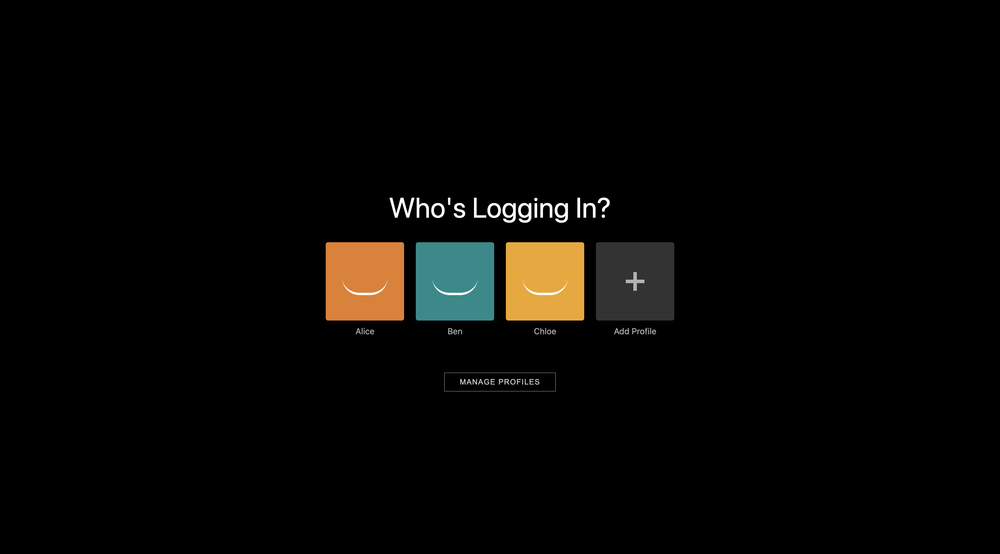
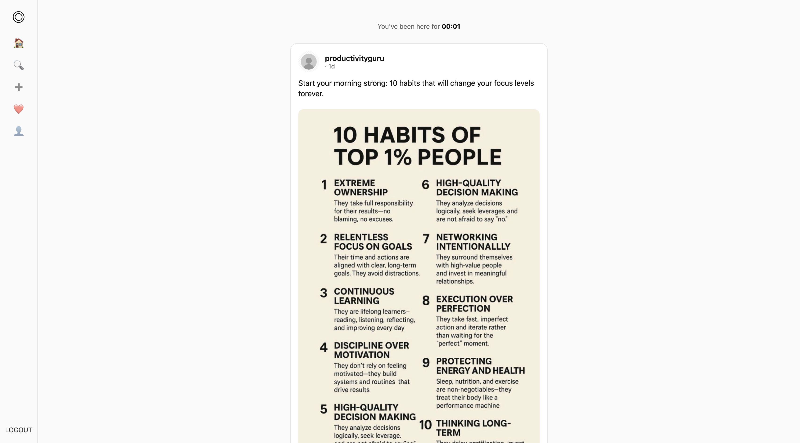
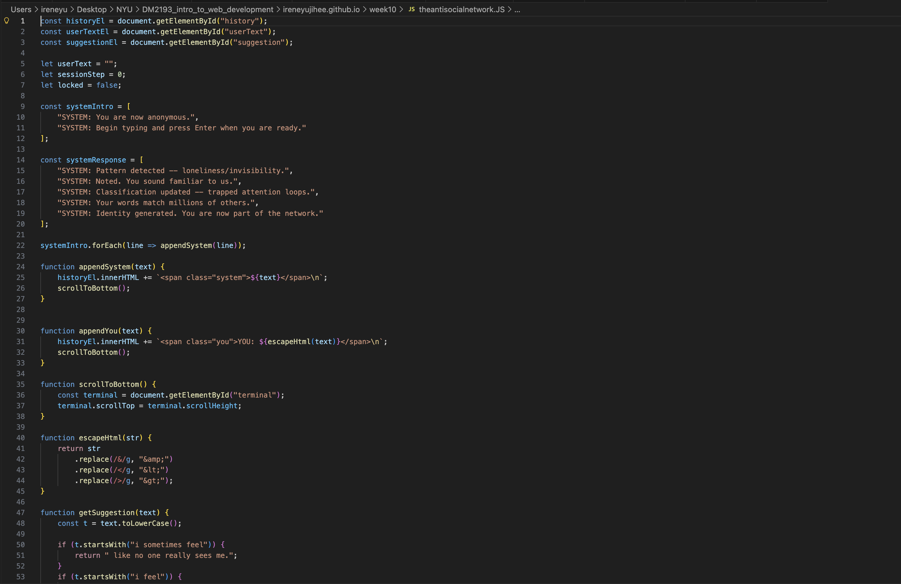

Even before starting any HTML, my first challenge was simply pushing files to GitHub. I didn’t even know what the terminal was, and when I saw other people typing what looked like a foreign language into it, I genuinely could not follow.
> But what’s funny is how natural it feels now — the whole git add, git commit, git push process has somehow become part of my muscle memory.
Looking back, the code and the page itself seem so simple — but at the time, it felt incredibly intimidating because I had no foundation in HTML or coding.
But when I finally got this first website working, I remember feeling so proud.
Then we learned how to use a separate stylesheet, which I thought was really cool. I also remember being fascinated by the button function that linked to another HTML page. That was the moment when I felt like I was actually learning how things worked.
Starting around Week 04, I began feeling more comfortable with HTML. I was doing my own research and learning about transitions and animations, and that made the work feel a lot more fun. This was also when I started thinking more seriously about design choices and how the page actually looked.
  And I’m not going to lie — when we moved on to JavaScript, I was intimidated again. But once I understood how it worked, I started to enjoy it the same way I did with HTML. I especially liked making the Social Dilemma website, because I was finally using HTML, CSS, and JavaScript together for the first time. It was also really fun to create a page that actually looked similar to a real interface.